首 をドロップするmob一覧
一覧ページへ
| スリップワーカー | アンデット | 一般1 | |||||||
|---|---|---|---|---|---|---|---|---|---|
| 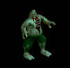 | スリング(410) | ステッキ(270) | 弾(410) | 兜・帽子(230) | 首(210) | ブローチ(120) | |||
| ルナティック | アンデット | 一般2 | |||||||
| 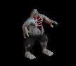 | スリング(380) | ステッキ(250) | 弾(380) | 足(210) | 首(190) | ブローチ(130) | |||
| プレーガー | アンデット | 一般3 | |||||||
 | スリング(360) | ステッキ(240) | 弾(360) | 腰(200) | 首(180) | ブローチ(140) | |||
| アライブコープス | アンデット | ボス1 | |||||||
 | スリング(470) | ステッキ(310) | 鍵(50) | 足(260) | 首(240) | ブローチ(160) | |||
| ミイラ | アンデット | 一般2 | |||||||
 | 槍(380) | 杖(250) | 状態異常回復1(380) | 腰(210) | 手首(190) | 能力向上2(150) | 本(250) | 箒(380) | |
| 包帯人間 | アンデット | 一般3 | |||||||
 | 槍(360) | 杖(240) | 矢(360) | 腰(200) | 手首(180) | 能力向上2(140) | 本(240) | 箒(360) | 魔弾(360) |
| エンバームド | アンデット | 一般4 | |||||||
 | 槍(300) | 鞭(200) | 状態異常回復1(300) | 腰(170) | 手首(150) | 能力向上2(120) | 箒(300) | ||
| マミー | アンデット | セミ1 | |||||||
 | 槍(390) | 杖(260) | 状態異常回復1(390) | 腰(220) | 手首(200) | 能力向上2(160) | 本(260) | 箒(390) | |
| マミーキング | アンデット | ボス1 | |||||||
 | 槍(470) | 鞭(310) | 状態異常回復1(470) | 腰(260) | 手首(240) | 能力向上2(190) | 箒(470) | ||
| リビングメイル | アンデット | 一般2 | |||||||
 | 弓(380) | 片手剣(250) | 盾(380) | 鎧(210) | 手首(190) | 能力向上1(150) | クロー(250) | 銃(380) | |
| 鎧霊 | アンデット | 一般3 | |||||||
 | 弓(360) | 片手剣(240) | 弾(360) | 鎧(200) | 首(180) | 能力向上1(140) | クロー(240) | 銃(360) | |
| 幽霊鎧 | アンデット | 一般4 | |||||||
 | 弓(300) | 両手剣(200) | 盾(300) | 鎧(170) | 手首(150) | 能力向上1(120) | 鎌(200) | 銃(300) | |
| 守護鎧 | アンデット | セミ1 | |||||||
 | 弓(390) | 片手剣(260) | 盾(390) | 鎧(220) | 首(200) | 能力向上1(160) | クロー(260) | 銃(390) | |
| 幻想鎧 | アンデット | ボス1 | |||||||
 | 弓(470) | 両手剣(310) | 盾(470) | 鎧(260) | 手首(240) | 能力向上2(190) | 鎌(310) | 銃(470) | |
| ハンター | 人間 | 一般1 | |||||||
 | 弓(410) | 片手剣(270) | 矢(410) | グローブ(230) | 手首(210) | 腕刺青(150) | クロー(270) | 銃(410) | 魔弾(410) |
| アーチャー | 人間 | 一般2 | |||||||
| 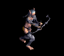 | 弓(380) | 片手剣(250) | 矢(380) | グローブ(210) | 手首(190) | 腕刺青(160) | クロー(250) | 銃(380) | 魔弾(380) |
| シューター | 人間 | 一般3 | |||||||
| 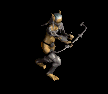 | 弓(360) | 片手剣(240) | 矢(360) | グローブ(200) | 手首(180) | 腕刺青(170) | クロー(240) | 銃(360) | 魔弾(360) |
| スナイパー | 人間 | セミ1 | |||||||
| 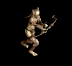 | 弓(390) | 片手剣(260) | 矢(390) | グローブ(220) | 手首(200) | 腕刺青(180) | クロー(260) | 銃(390) | 魔弾(390) |
| ブラックエルフ | 人間 | ボス1 | |||||||
 | 弓(470) | 片手剣(310) | イベント(470) | グローブ(260) | 手首(240) | 腕刺青(190) | クロー(310) | 銃(470) | |
| ストラグラー | 人間 | 一般1 | |||||||
| 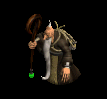 | 杖(410) | スリング(270) | 弾(410) | 腰(230) | 首(210) | 能力向上2(160) | 本(410) | ||
| 堕落魔法師 | 人間 | 一般3 | |||||||
| 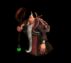 | 杖(360) | スリング(240) | イベント(360) | マント(200) | 首(180) | 能力向上2(140) | 本(360) | ||
| ソーサラー | 人間 | セミ1 | |||||||
 | 杖(390) | スリング(260) | 状態異常回復2(100) | 職業鎧(220) | 首(200) | 能力向上2(160) | 本(390) | ||
| ドゥームキャスター | 人間 | ボス1 | |||||||
 | 杖(470) | スリング(310) | 弾(470) | 兜・帽子(260) | 首(240) | 能力向上2(190) | 本(470) | ||
| 斧槍兵 | 人間 | 一般2 | |||||||
 | 槍(380) | 両手剣(250) | 状態異常回復1(380) | 鎧(210) | 手首(190) | 十字架(120) | 鎌(250) | 箒(380) | |
| コートナイト | 人間 | 一般3 | |||||||
 | 槍(360) | 両手剣(240) | イベント(360) | 兜・帽子(200) | 手首(180) | 十字架(130) | 鎌(240) | 箒(360) | |
| レッドアイ護衛兵 | 人間 | 一般4 | |||||||
 | 槍(300) | 両手剣(200) | 鍵(20) | 鎧(170) | 手首(150) | 十字架(140) | 鎌(200) | 箒(300) | |
| テンプラー | 人間 | セミ2 | |||||||
 | 槍(420) | 両手剣(280) | 鍵(30) | 兜・帽子(230) | 手首(210) | 十字架(150) | 鎌(280) | 箒(420) | |
| アベンジャー | 人間 | ボス2 | |||||||
 | 槍(490) | 両手剣(330) | 矢(490) | 鎧(270) | 手首(250) | 十字架(160) | 鎌(330) | 箒(490) | 魔弾(490) |
| 偽聖職者 | 人間 | 一般4 | |||||||
 | 鈍器(300) | 翼(200) | 盾(300) | 職業鎧(170) | 首(150) | 十字架(200) | 水晶(200) | ||
| ダークプリースト | 人間 | セミ2 | |||||||
| 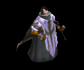 | 鈍器(420) | 翼(280) | 状態異常回復2(110) | 職業鎧(230) | 首(210) | 十字架(210) | 水晶(280) | ||
| ダークビショップ | 人間 | ボス2 | |||||||
 | 鈍器(490) | 翼(330) | 盾(490) | 兜・帽子(270) | 首(250) | 十字架(220) | 水晶(330) | ||
| ジャイアント | 人間 | セミ1 | |||||||
 | 鈍器(390) | 牙(260) | HP回復(390) | 足(220) | 首(200) | 能力向上1(160) | 双剣(260) | ||
| ドゥームスフィア | 悪魔 | 一般4 | |||||||
 | 笛(300) | 翼(200) | 状態異常回復1(300) | 兜・帽子(170) | 首(150) | 帰還(120) | 水晶(200) | ||
| アルゴス | 悪魔 | セミ3 | |||||||
 | 笛(450) | 翼(300) | 鍵(450) | 兜・帽子(250) | 首(230) | 帰還(180) | 水晶(300) | ||
| 鷲戦士 | 悪魔 | 一般1 | |||||||
 | 片手剣(410) | 両手剣(270) | 盾(410) | グローブ(230) | 手首(210) | 腕刺青(110) | 鎌(270) | クロー(410) | |
| 鷲闘士 | 悪魔 | 一般2 | |||||||
 | 片手剣(380) | 弓(250) | 盾(380) | グローブ(210) | 手首(190) | 腕刺青(120) | クロー(380) | 銃(250) | |
| 鷲狂戦士 | 悪魔 | 一般3 | |||||||
| 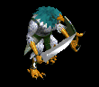 | 片手剣(360) | 弓(240) | 矢(360) | グローブ(200) | 手首(180) | 腕刺青(130) | クロー(360) | 銃(240) | 魔弾(360) |
| 鷲剣士 | 悪魔 | セミ1 | |||||||
 | 片手剣(390) | 両手剣(260) | 盾(390) | グローブ(220) | 手首(200) | 腕刺青(140) | 鎌(260) | クロー(390) | |
| 鷲王 | 悪魔 | ボス1 | |||||||
 | 片手剣(470) | 弓(310) | 盾(470) | グローブ(260) | 手首(240) | 腕刺青(150) | クロー(470) | 銃(310) | |
| リザードライダー | 悪魔 | 一般2 | |||||||
 | スリング(380) | 槍(250) | イベント(380) | 職業鎧(210) | 首(190) | 能力向上2(150) | 箒(250) | ||
| リザードチャージ | 悪魔 | 一般3 | |||||||
 | ステッキ(360) | 槍(240) | イベント(360) | 職業鎧(200) | 首(180) | 能力向上2(140) | 箒(240) | ||
| リザードトルーパ | 悪魔 | 一般4 | |||||||
 | ステッキ(300) | 弓(200) | 矢(300) | 職業鎧(170) | 首(150) | 能力向上2(120) | 銃(200) | 魔弾(300) | |
| ナーガナイト | 悪魔 | セミ2 | |||||||
 | ステッキ(420) | 弓(280) | HP回復(420) | 職業鎧(230) | 首(210) | 能力向上2(170) | 銃(280) | ||
| ナーガランサー | 悪魔 | ボス2 | |||||||
 | スリング(490) | 弓(330) | 矢(490) | 職業鎧(270) | 首(250) | 能力向上2(200) | 銃(330) | 魔弾(490) | |
| ラティアン | 悪魔 | 一般3 | |||||||
 | 投擲(360) | 笛(240) | 弾(360) | 足(200) | 手首(180) | 帰還(140) | |||
| ホーンド | 悪魔 | セミ1 | |||||||
 | ステッキ(390) | 翼(260) | 状態異常回復2(100) | マント(220) | 手首(200) | 宝石(160) | 水晶(260) | ||
| ストーントルド | 悪魔 | セミ3 | |||||||
 | none(450) | 鈍器(300) | 盾(450) | 腰(250) | 手首(230) | 能力向上2(180) | |||
| 赤い悪魔 | 悪魔 | ボス3 | |||||||
 | none(510) | 両手剣(340) | 鍵(510) | 職業鎧(280) | 首(260) | 能力向上1(200) | 鎌(340) | ||
| スパイダー | 動物 | 一般1 | |||||||
| 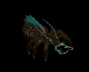 | 片手剣(410) | 投擲(270) | 矢(410) | グローブ(230) | 首(210) | 帰還(160) | クロー(410) | 魔弾(410) | |
| フェイズスパイダ | 動物 | 一般2 | |||||||
 | 片手剣(380) | 投擲(250) | 矢(380) | グローブ(210) | 首(190) | 帰還(150) | クロー(380) | 魔弾(380) | |
| ソードスパイダー | 動物 | 一般3 | |||||||
 | 片手剣(360) | 槍(240) | 矢(360) | グローブ(200) | 首(180) | 能力向上1(140) | クロー(360) | 箒(240) | 魔弾(360) |
| ウィーブウィドウ | 動物 | セミ1 | |||||||
 | 片手剣(390) | 槍(260) | 矢(390) | グローブ(220) | 首(200) | 帰還(160) | クロー(390) | 箒(260) | 魔弾(390) |
| アラクノーイド | 動物 | ボス1 | |||||||
 | 片手剣(470) | 投擲(310) | 矢(470) | グローブ(260) | 首(240) | 宝石(190) | クロー(470) | 魔弾(470) | |
| ポイズンテール | 動物 | 一般2 | |||||||
 | 弓(380) | 槍(250) | 矢(380) | 兜・帽子(210) | 手首(190) | 特殊1(150) | 箒(250) | 銃(380) | 魔弾(380) |
| スノースコルピオ | 動物 | ボス2 | |||||||
 | 弓(490) | 槍(330) | 盾(490) | 兜・帽子(270) | 手首(250) | 特殊1(200) | 箒(330) | 銃(490) | |
| 飛海月 | 動物 | 一般1 | |||||||
 | 鞭(410) | スリング(270) | 弾(410) | 腰(230) | 手首(210) | 帰還(160) | |||
| アクアスライム | 動物 | 一般3 | |||||||
 | 鞭(360) | スリング(240) | 弾(360) | 腰(200) | 手首(180) | 帰還(140) | |||
| 水晶烏賊 | 動物 | セミ1 | |||||||
 | 鞭(390) | スリング(260) | 弾(390) | 腰(220) | 手首(200) | 能力向上2(160) | |||
| クラーケン | 動物 | ボス1 | |||||||
 | 鞭(470) | スリング(310) | 弾(470) | 腰(260) | 手首(240) | 帰還(190) | |||
| 鋏昆虫の群れ | 動物 | 一般2 | |||||||
 | 笛(380) | 翼(250) | イベント(380) | 腰(210) | 首(190) | 帰還(150) | 水晶(250) | ||
| イナゴの群れ | 動物 | セミ1 | |||||||
| 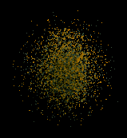 | 笛(390) | 翼(260) | イベント(390) | 兜・帽子(220) | 首(200) | 帰還(160) | 水晶(260) | ||
| スリップワーカーEx | アンデット | 一般1 | |||||||
| スリング(410) | ステッキ(270) | 弾(410) | 兜・帽子(230) | 首(210) | ブローチ(120) | ||||
| ルナティックEx | アンデット | 一般2 | |||||||
| スリング(380) | ステッキ(250) | 弾(380) | 足(210) | 首(190) | ブローチ(130) | ||||
| プレーガーEx | アンデット | 一般3 | |||||||
| スリング(360) | ステッキ(240) | 弾(360) | 腰(200) | 首(180) | ブローチ(140) | |||
| アライブコープスEx | アンデット | ボス1 | |||||||
| スリング(1200) | ステッキ(800) | 鍵(60) | 足(670) | 首(600) | ブローチ(160) | |||
| ミイラEx | アンデット | 一般2 | |||||||
| 槍(380) | 杖(250) | 状態異常回復1(380) | 腰(210) | 手首(190) | 能力向上2(150) | 本(250) | 箒(380) | |
| 包帯人間Ex | アンデット | 一般3 | |||||||
| 槍(360) | 杖(240) | 矢(360) | 腰(200) | 手首(180) | 能力向上2(140) | 本(240) | 箒(360) | 魔弾(360) |
| エンバームドEx | アンデット | 一般4 | |||||||
| 槍(300) | 鞭(200) | 状態異常回復1(300) | 腰(170) | 手首(150) | 能力向上2(120) | 箒(300) | ||
| マミーEx | アンデット | セミ1 | |||||||
| 槍(450) | 杖(300) | 状態異常回復1(450) | 腰(250) | 手首(230) | 能力向上2(180) | 本(300) | 箒(450) | |
| マミーキングEx | アンデット | ボス1 | |||||||
| 槍(1200) | 鞭(800) | 状態異常回復1(1200) | 腰(670) | 手首(600) | 能力向上2(480) | 箒(1200) | ||
| リビングメイルEx | アンデット | 一般2 | |||||||
| 弓(380) | 片手剣(250) | 盾(380) | 鎧(210) | 手首(190) | 能力向上1(150) | クロー(250) | 銃(380) | |
| 鎧霊Ex | アンデット | 一般3 | |||||||
| 弓(360) | 片手剣(240) | 弾(360) | 鎧(200) | 首(180) | 能力向上1(140) | クロー(240) | 銃(360) | |
| 幽霊鎧Ex | アンデット | 一般4 | |||||||
| 弓(300) | 両手剣(200) | 盾(300) | 鎧(170) | 手首(150) | 能力向上1(120) | 鎌(200) | 銃(300) | |
| 守護鎧Ex | アンデット | セミ1 | |||||||
| 弓(450) | 片手剣(300) | 盾(450) | 鎧(250) | 首(230) | 能力向上1(180) | クロー(300) | 銃(450) | |
| 幻想鎧Ex | アンデット | ボス1 | |||||||
| 弓(1200) | 両手剣(800) | 盾(1200) | 鎧(670) | 手首(600) | 能力向上2(480) | 鎌(800) | 銃(1200) | |
| ハンターEx | 人間 | 一般1 | |||||||
| 弓(410) | 片手剣(270) | 矢(410) | グローブ(230) | 手首(210) | 腕刺青(150) | クロー(270) | 銃(410) | 魔弾(410) |
| アーチャーEx | 人間 | 一般2 | |||||||
| 弓(380) | 片手剣(250) | 矢(380) | グローブ(210) | 手首(190) | 腕刺青(160) | クロー(250) | 銃(380) | 魔弾(380) | |
| アーチャーEx | 人間 | 一般3 | |||||||
| 弓(360) | 片手剣(240) | 矢(360) | グローブ(200) | 手首(180) | 腕刺青(170) | クロー(240) | 銃(360) | 魔弾(360) | |
| スナイパーEx | 人間 | セミ1 | |||||||
| 弓(450) | 片手剣(300) | 矢(450) | グローブ(250) | 手首(230) | 腕刺青(180) | クロー(300) | 銃(450) | 魔弾(450) | |
| ブラックエルフEx | 人間 | ボス1 | |||||||
| 弓(1200) | 片手剣(800) | イベント(1200) | グローブ(670) | 手首(600) | 腕刺青(190) | クロー(800) | 銃(1200) | |
| ストラグラーEx | 人間 | 一般1 | |||||||
| 杖(410) | スリング(270) | 弾(410) | 腰(230) | 首(210) | 能力向上2(160) | 本(410) | |||
| 堕落魔法師Ex | 人間 | 一般3 | |||||||
| 杖(360) | スリング(240) | イベント(360) | マント(200) | 首(180) | 能力向上2(140) | 本(360) | |||
| ソーサラーEx | 人間 | セミ1 | |||||||
| 杖(450) | スリング(300) | 状態異常回復2(110) | 職業鎧(250) | 首(230) | 能力向上2(180) | 本(450) | ||
| ドゥームキャスターEx | 人間 | ボス1 | |||||||
| 杖(1200) | スリング(800) | 弾(1200) | 兜・帽子(670) | 首(600) | 能力向上2(480) | 本(1200) | ||
| 斧槍兵Ex | 人間 | 一般2 | |||||||
| 槍(380) | 両手剣(250) | 状態異常回復1(380) | 鎧(210) | 手首(190) | 十字架(120) | 鎌(250) | 箒(380) | |
| コートナイトEx | 人間 | 一般3 | |||||||
| 槍(360) | 両手剣(240) | イベント(360) | 兜・帽子(200) | 手首(180) | 十字架(130) | 鎌(240) | 箒(360) | |
| レッドアイ護衛兵Ex | 人間 | 一般4 | |||||||
| 槍(300) | 両手剣(200) | 鍵(30) | 鎧(170) | 手首(150) | 十字架(140) | 鎌(200) | 箒(300) | |
| テンプラーEx | 人間 | セミ2 | |||||||
| 槍(650) | 両手剣(430) | 鍵(50) | 兜・帽子(360) | 手首(330) | 十字架(150) | 鎌(430) | 箒(650) | |
| アベンジャーEx | 人間 | ボス2 | |||||||
| 槍(2000) | 両手剣(1330) | 矢(2000) | 鎧(1110) | 手首(1000) | 十字架(160) | 鎌(1330) | 箒(2000) | 魔弾(2000) |
| 偽聖職者Ex | 人間 | 一般4 | |||||||
| 鈍器(300) | 翼(200) | 盾(300) | 職業鎧(170) | 首(150) | 十字架(200) | 水晶(200) | ||
| ダークプリーストEx | 人間 | セミ2 | |||||||
| 鈍器(650) | 翼(430) | 状態異常回復2(160) | 職業鎧(360) | 首(330) | 十字架(210) | 水晶(430) | |||
| ダークビショップEx | 人間 | ボス2 | |||||||
| 鈍器(2000) | 翼(1330) | 盾(2000) | 兜・帽子(1110) | 首(1000) | 十字架(220) | 水晶(1330) | ||
| ジャイアントEx | 人間 | セミ1 | |||||||
| 鈍器(450) | 牙(300) | HP回復(450) | 足(250) | 首(230) | 能力向上1(180) | 双剣(300) | ||
| ドゥームスフィアEx | 悪魔 | 一般4 | |||||||
| 笛(300) | 翼(200) | 状態異常回復1(300) | 兜・帽子(170) | 首(150) | 帰還(120) | 水晶(200) | ||
| アルゴスEx | 悪魔 | セミ3 | |||||||
| 笛(800) | 翼(530) | 鍵(50) | 兜・帽子(440) | 首(400) | 帰還(320) | 水晶(530) | ||
| 鷲戦士Ex | 悪魔 | 一般1 | |||||||
| 片手剣(410) | 両手剣(270) | 盾(410) | グローブ(230) | 手首(210) | 腕刺青(110) | 鎌(270) | クロー(410) | |
| 鷲闘士Ex | 悪魔 | 一般2 | |||||||
| 片手剣(380) | 弓(250) | 盾(380) | グローブ(210) | 手首(190) | 腕刺青(120) | クロー(380) | 銃(250) | |
| 鷲狂戦士Ex | 悪魔 | 一般3 | |||||||
| 片手剣(360) | 弓(240) | 矢(360) | グローブ(200) | 手首(180) | 腕刺青(130) | クロー(360) | 銃(240) | 魔弾(360) | |
| 鷲剣士Ex | 悪魔 | セミ1 | |||||||
| 片手剣(450) | 両手剣(300) | 盾(450) | グローブ(250) | 手首(230) | 腕刺青(140) | 鎌(300) | クロー(450) | |
| 鷲王Ex | 悪魔 | ボス1 | |||||||
| 片手剣(1200) | 弓(800) | 盾(1200) | グローブ(670) | 手首(600) | 腕刺青(150) | クロー(1200) | 銃(800) | |
| リザードライダーEx | 悪魔 | 一般2 | |||||||
| スリング(380) | 槍(250) | イベント(380) | 職業鎧(210) | 首(190) | 能力向上2(150) | 箒(250) | ||
| リザードチャージEx | 悪魔 | 一般3 | |||||||
| ステッキ(360) | 槍(240) | イベント(360) | 職業鎧(200) | 首(180) | 能力向上2(140) | 箒(240) | ||
| リザードトルーパEx | 悪魔 | 一般4 | |||||||
| ステッキ(300) | 弓(200) | 矢(300) | 職業鎧(170) | 首(150) | 能力向上2(120) | 銃(200) | 魔弾(300) | |
| ナーガナイトEx | 悪魔 | セミ2 | |||||||
| ステッキ(650) | 弓(430) | HP回復(650) | 職業鎧(360) | 首(330) | 能力向上2(260) | 銃(430) | ||
| ナーガランサーEx | 悪魔 | ボス2 | |||||||
| スリング(2000) | 弓(1330) | 矢(2000) | 職業鎧(1110) | 首(1000) | 能力向上2(800) | 銃(1330) | 魔弾(2000) | |
| ラティアンEx | 悪魔 | 一般3 | |||||||
| 投擲(360) | 笛(240) | 弾(360) | 足(200) | 手首(180) | 帰還(140) | |||
| ホーンドEx | 悪魔 | セミ1 | |||||||
| ステッキ(450) | 翼(300) | 状態異常回復2(110) | マント(250) | 手首(230) | 宝石(180) | 水晶(300) | ||
| ストーントルドEx | 悪魔 | セミ3 | |||||||
| none(800) | 鈍器(530) | 盾(800) | 腰(440) | 手首(400) | 能力向上2(320) | |||
| 赤い悪魔Ex | 悪魔 | ボス3 | |||||||
| none(2800) | 両手剣(1870) | 鍵(700) | 職業鎧(1560) | 首(1400) | 能力向上1(1120) | 鎌(1870) | ||
| スパイダーEx | 動物 | 一般1 | |||||||
| 片手剣(410) | 投擲(270) | 矢(410) | グローブ(230) | 首(210) | 帰還(160) | クロー(410) | 魔弾(410) | ||
| フェイズスパイダEx | 動物 | 一般2 | |||||||
| 片手剣(380) | 投擲(250) | 矢(380) | グローブ(210) | 首(190) | 帰還(150) | クロー(380) | 魔弾(380) | |
| ソードスパイダーEx | 動物 | 一般3 | |||||||
| 片手剣(360) | 槍(240) | 矢(360) | グローブ(200) | 首(180) | 能力向上1(140) | クロー(360) | 箒(240) | 魔弾(360) |
| ウィーブウィドウEx | 動物 | セミ1 | |||||||
| 片手剣(450) | 槍(300) | 矢(450) | グローブ(250) | 首(230) | 帰還(180) | クロー(450) | 箒(300) | 魔弾(450) |
| アラクノーイドEx | 動物 | ボス1 | |||||||
| 片手剣(1200) | 投擲(800) | 矢(1200) | グローブ(670) | 首(600) | 宝石(480) | クロー(1200) | 魔弾(1200) | |
| ポイズンテールEx | 動物 | 一般2 | |||||||
| 弓(380) | 槍(250) | 矢(380) | 兜・帽子(210) | 手首(190) | 特殊1(150) | 箒(250) | 銃(380) | 魔弾(380) |
| スノースコルピオEx | 動物 | ボス2 | |||||||
| 弓(2000) | 槍(1330) | 盾(2000) | 兜・帽子(1110) | 手首(1000) | 特殊1(800) | 箒(1330) | 銃(2000) | |
| 飛海月Ex | 動物 | 一般1 | |||||||
| 鞭(410) | スリング(270) | 弾(410) | 腰(230) | 手首(210) | 帰還(160) | |||
| アクアスライムEx | 動物 | 一般3 | |||||||
| 鞭(360) | スリング(240) | 弾(360) | 腰(200) | 手首(180) | 帰還(140) | |||
| 水晶烏賊Ex | 動物 | セミ1 | |||||||
| 鞭(450) | スリング(300) | 弾(450) | 腰(250) | 手首(230) | 能力向上2(180) | |||
| クラーケンEx | 動物 | ボス1 | |||||||
| 鞭(1200) | スリング(800) | 弾(1200) | 腰(670) | 手首(600) | 帰還(480) | |||
| 鋏昆虫の群れEx | 動物 | 一般2 | |||||||
| 笛(380) | 翼(250) | イベント(380) | 腰(210) | 首(190) | 帰還(150) | 水晶(250) | ||
| イナゴの群れEx | 動物 | セミ1 | |||||||
| 笛(450) | 翼(300) | イベント(450) | 兜・帽子(250) | 首(230) | 帰還(180) | 水晶(300) | |||
| ファイアブロアーEx | 神獣 | 一般1 | |||||||
 | スリング(410) | 牙(270) | 弾(410) | グローブ(230) | 手首(210) | 能力向上2(160) | 双剣(410) | ||
| フーフーEx | 神獣 | 一般2 | |||||||
 | スリング(380) | 杖(250) | 弾(380) | グローブ(210) | 手首(190) | 能力向上2(150) | 本(250) | ||
| ブレイジャーEx | 神獣 | 一般3 | |||||||
 | スリング(360) | 牙(240) | 弾(360) | グローブ(200) | 手首(180) | 能力向上2(140) | 双剣(240) | ||
| 炎鬼Ex | 神獣 | セミ1 | |||||||
 | スリング(450) | 杖(300) | 弾(450) | グローブ(250) | 手首(230) | 能力向上2(180) | 本(300) | ||
| 火炎悪魔Ex | 神獣 | ボス1 | |||||||
 | スリング(1200) | 牙(800) | 弾(1200) | グローブ(670) | 手首(600) | 能力向上2(480) | 双剣(800) | ||
| オクトパストンEx | 神獣 | 一般1 | |||||||
 | 投擲(410) | 牙(270) | イベント(410) | マント(230) | 首(210) | 肩刺青(170) | 双剣(270) | ||
| 凍破Ex | 神獣 | 一般2 | |||||||
 | 投擲(380) | 牙(250) | イベント(380) | マント(210) | 首(190) | 肩刺青(180) | 双剣(250) | ||
| キャストアイEx | 神獣 | 一般3 | |||||||
 | 投擲(360) | 牙(240) | イベント(360) | マント(200) | 首(180) | 肩刺青(190) | 双剣(240) | ||
| スノーツリーEx | 神獣 | セミ1 | |||||||
 | 投擲(450) | 牙(300) | イベント(450) | マント(250) | 首(230) | 肩刺青(200) | 双剣(300) | ||
| サーリビラエEx | 神獣 | ボス1 | |||||||
 | 投擲(1200) | 牙(800) | イベント(1200) | マント(670) | 首(600) | 肩刺青(210) | 双剣(800) | ||
| ティンバーマンEx | 神獣 | 一般4 | |||||||
 | 杖(300) | 片手剣(200) | HP回復(300) | グローブ(170) | 首(150) | 能力向上1(120) | クロー(200) | 本(300) | |
| イフリィトEx | 神獣 | セミ2 | |||||||
 | 弓(650) | ステッキ(430) | 矢(650) | マント(360) | 首(330) | 能力向上2(260) | 銃(650) | 魔弾(650) | |
| スルタンEx | 神獣 | ボス2 | |||||||
| 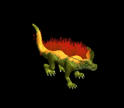 | 弓(2000) | ステッキ(1330) | 矢(2000) | 足(1110) | 首(1000) | 能力向上2(800) | 銃(2000) | 魔弾(2000) | |
| シャドウスEx | 神獣 | セミ2 | |||||||
| 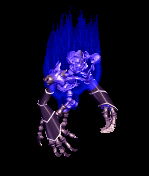 | 両手剣(650) | スリング(430) | 盾(650) | グローブ(360) | 手首(330) | 特殊1(260) | 鎌(650) | ||
| ホワイトシャドーEx | 神獣 | セミ2 | |||||||
 | 片手剣(650) | 両手剣(430) | 盾(650) | 鎧(360) | 手首(330) | 特殊1(260) | 鎌(430) | クロー(650) | |
| ペールライトEx | 神獣 | ボス3 | |||||||
 | 笛(2800) | ステッキ(1870) | 盾(2800) | 腰(1560) | 手首(1400) | 帰還(1120) | |||
| 骸骨サンタ | アンデット | ボス3 | |||||||
 | 弓(1210) | 片手剣(810) | 矢(1210) | グローブ(700) | 手首(610) | 腕刺青(150) | クロー(810) | 銃(1210) | 魔弾(1210) |
| スリップワーカーZin | アンデット | 一般1 | |||||||
| スリング(1210) | ステッキ(810) | 弾(1210) | 兜・帽子(670) | 首(610) | ブローチ(120) | ||||
| ルナティックZin | アンデット | 一般2 | |||||||
| スリング(1380) | ステッキ(920) | 弾(1380) | 足(770) | 首(690) | ブローチ(130) | ||||
| プレーガーZin | アンデット | 一般3 | |||||||
| スリング(1560) | ステッキ(1040) | 弾(1560) | 腰(870) | 首(780) | ブローチ(140) | |||
| アライブコープスZin | アンデット | ボス1 | |||||||
| スリング(1000) | ステッキ(670) | 鍵(130) | 足(560) | 首(500) | ブローチ(160) | |||
| ミイラZin | アンデット | 一般2 | |||||||
| 槍(1380) | 杖(920) | 状態異常回復1(1380) | 腰(770) | 手首(690) | 能力向上2(550) | 本(920) | 箒(1380) | |
| 包帯人間Zin | アンデット | 一般3 | |||||||
| 槍(1560) | 杖(1040) | 矢(1560) | 腰(870) | 手首(780) | 能力向上2(620) | 本(1040) | 箒(1560) | 魔弾(1560) |
| エンバームドZin | アンデット | 一般4 | |||||||
| 槍(1200) | 鞭(800) | 状態異常回復1(1200) | 腰(670) | 手首(600) | 能力向上2(480) | 箒(1200) | ||
| マミーZin | アンデット | セミ1 | |||||||
| 槍(650) | 杖(430) | 状態異常回復1(650) | 腰(360) | 手首(330) | 能力向上2(260) | 本(430) | 箒(650) | |
| マミーキングZin | アンデット | ボス1 | |||||||
| 槍(1000) | 鞭(670) | 状態異常回復1(1000) | 腰(560) | 手首(500) | 能力向上2(400) | 箒(1000) | ||
| リビングメイルZin | アンデット | 一般2 | |||||||
| 弓(1380) | 片手剣(920) | 盾(1380) | 鎧(770) | 手首(690) | 能力向上1(550) | クロー(920) | 銃(1380) | |
| 鎧霊Zin | アンデット | 一般3 | |||||||
| 弓(1560) | 片手剣(1040) | 弾(1560) | 鎧(870) | 首(780) | 能力向上1(620) | クロー(1040) | 銃(1560) | |
| 幽霊鎧Zin | アンデット | 一般4 | |||||||
| 弓(1200) | 両手剣(800) | 盾(1200) | 鎧(670) | 手首(600) | 能力向上1(480) | 鎌(800) | 銃(1200) | |
| 守護鎧Zin | アンデット | セミ1 | |||||||
| 弓(650) | 片手剣(430) | 盾(650) | 鎧(360) | 首(330) | 能力向上1(260) | クロー(430) | 銃(650) | |
| 幻想鎧Zin | アンデット | ボス1 | |||||||
| 弓(1000) | 両手剣(670) | 盾(1000) | 鎧(560) | 手首(500) | 能力向上2(400) | 鎌(670) | 銃(1000) | |
| ハンターZin | 人間 | 一般1 | |||||||
| 弓(1210) | 片手剣(810) | 矢(1210) | グローブ(670) | 手首(610) | 腕刺青(150) | クロー(810) | 銃(1210) | 魔弾(1210) |
| アーチャーZin | 人間 | 一般2 | |||||||
| 弓(1380) | 片手剣(920) | 矢(1380) | グローブ(770) | 手首(690) | 腕刺青(160) | クロー(920) | 銃(1380) | 魔弾(1380) | |
| アーチャーZin | 人間 | 一般3 | |||||||
| 弓(1560) | 片手剣(1040) | 矢(1560) | グローブ(870) | 手首(780) | 腕刺青(170) | クロー(1040) | 銃(1560) | 魔弾(1560) | |
| スナイパーZin | 人間 | セミ1 | |||||||
| 弓(650) | 片手剣(430) | 矢(650) | グローブ(360) | 手首(330) | 腕刺青(180) | クロー(430) | 銃(650) | 魔弾(650) | |
| ブラックエルフZin | 人間 | ボス1 | |||||||
| 弓(1000) | 片手剣(670) | イベント(1000) | グローブ(560) | 手首(500) | 腕刺青(190) | クロー(670) | 銃(1000) | |
| ストラグラーZin | 人間 | 一般1 | |||||||
| 杖(1210) | スリング(810) | 弾(1210) | 腰(670) | 首(610) | 能力向上2(480) | 本(1210) | |||
| 堕落魔法師Zin | 人間 | 一般3 | |||||||
| 杖(1560) | スリング(1040) | イベント(1560) | マント(870) | 首(780) | 能力向上2(620) | 本(1560) | |||
| ソーサラーZin | 人間 | セミ1 | |||||||
| 杖(650) | スリング(430) | 状態異常回復2(160) | 職業鎧(360) | 首(330) | 能力向上2(260) | 本(650) | ||
| ドゥームキャスターZin | 人間 | ボス1 | |||||||
| 杖(1000) | スリング(670) | 弾(1000) | 兜・帽子(560) | 首(500) | 能力向上2(400) | 本(1000) | ||
| 斧槍兵Zin | 人間 | 一般2 | |||||||
| 槍(1380) | 両手剣(920) | 状態異常回復1(1380) | 鎧(770) | 手首(690) | 十字架(120) | 鎌(920) | 箒(1380) | |
| コートナイトZin | 人間 | 一般3 | |||||||
| 槍(1560) | 両手剣(1040) | イベント(1560) | 兜・帽子(870) | 手首(780) | 十字架(130) | 鎌(1040) | 箒(1560) | |
| レッドアイ護衛兵Zin | 人間 | 一般4 | |||||||
| 槍(1200) | 両手剣(800) | 鍵(70) | 鎧(670) | 手首(600) | 十字架(140) | 鎌(800) | 箒(1200) | |
| テンプラーZin | 人間 | セミ2 | |||||||
| 槍(750) | 両手剣(500) | 鍵(80) | 兜・帽子(420) | 手首(380) | 十字架(150) | 鎌(500) | 箒(750) | |
| アベンジャーZin | 人間 | ボス2 | |||||||
| 槍(1100) | 両手剣(730) | 矢(1100) | 鎧(610) | 手首(550) | 十字架(160) | 鎌(730) | 箒(1100) | 魔弾(1100) |
| 偽聖職者Zin | 人間 | 一般4 | |||||||
| 鈍器(1200) | 翼(800) | 盾(1200) | 職業鎧(670) | 首(600) | 十字架(200) | 水晶(800) | ||
| ダークプリーストZin | 人間 | セミ2 | |||||||
| 鈍器(750) | 翼(500) | 状態異常回復2(190) | 職業鎧(420) | 首(380) | 十字架(210) | 水晶(500) | |||
| ダークビショップZin | 人間 | ボス2 | |||||||
| 鈍器(1100) | 翼(730) | 盾(1100) | 兜・帽子(610) | 首(550) | 十字架(220) | 水晶(730) | ||
| ジャイアントZin | 人間 | セミ1 | |||||||
| 鈍器(650) | 牙(430) | HP回復(650) | 足(360) | 首(330) | 能力向上1(260) | 双剣(430) | ||
| ドゥームスフィアZin | 悪魔 | 一般4 | |||||||
| 笛(1200) | 翼(800) | 状態異常回復1(1200) | 兜・帽子(670) | 首(600) | 帰還(480) | 水晶(800) | ||
| アルゴスZin | 悪魔 | セミ3 | |||||||
| 笛(900) | 翼(600) | 鍵(40) | 兜・帽子(500) | 首(450) | 帰還(360) | 水晶(600) | ||
| 鷲戦士Zin | 悪魔 | 一般1 | |||||||
| 片手剣(1210) | 両手剣(810) | 盾(1210) | グローブ(670) | 手首(610) | 腕刺青(110) | 鎌(810) | クロー(1210) | |
| 鷲闘士Zin | 悪魔 | 一般2 | |||||||
| 片手剣(1380) | 弓(920) | 盾(1380) | グローブ(770) | 手首(690) | 腕刺青(120) | クロー(1380) | 銃(920) | |
| 鷲狂戦士Zin | 悪魔 | 一般3 | |||||||
| 片手剣(1560) | 弓(1040) | 矢(1560) | グローブ(870) | 手首(780) | 腕刺青(130) | クロー(1560) | 銃(1040) | 魔弾(1560) | |
| 鷲剣士Zin | 悪魔 | セミ1 | |||||||
| 片手剣(650) | 両手剣(430) | 盾(650) | グローブ(360) | 手首(330) | 腕刺青(140) | 鎌(430) | クロー(650) | |
| 鷲王Zin | 悪魔 | ボス1 | |||||||
| 片手剣(1000) | 弓(670) | 盾(1000) | グローブ(560) | 手首(500) | 腕刺青(150) | クロー(1000) | 銃(670) | |
| リザードライダーZin | 悪魔 | 一般2 | |||||||
| スリング(1380) | 槍(920) | イベント(1380) | 職業鎧(770) | 首(690) | 能力向上2(550) | 箒(920) | ||
| リザードチャージZin | 悪魔 | 一般3 | |||||||
| ステッキ(1560) | 槍(1040) | イベント(1560) | 職業鎧(870) | 首(780) | 能力向上2(620) | 箒(1040) | ||
| リザードトルーパZin | 悪魔 | 一般4 | |||||||
| ステッキ(1200) | 弓(800) | 矢(1200) | 職業鎧(670) | 首(600) | 能力向上2(480) | 銃(800) | 魔弾(1200) | |
| ナーガナイトZin | 悪魔 | セミ2 | |||||||
| ステッキ(750) | 弓(500) | HP回復(750) | 職業鎧(420) | 首(380) | 能力向上2(300) | 銃(500) | ||
| ナーガランサーZin | 悪魔 | ボス2 | |||||||
| スリング(1100) | 弓(730) | 矢(1100) | 職業鎧(610) | 首(550) | 能力向上2(440) | 銃(730) | 魔弾(1100) | |
| ラティアンZin | 悪魔 | 一般3 | |||||||
| 投擲(1560) | 笛(1040) | 弾(1560) | 足(870) | 手首(780) | 帰還(620) | |||
| ホーンドZin | 悪魔 | セミ1 | |||||||
| ステッキ(650) | 翼(430) | 状態異常回復2(160) | マント(360) | 手首(330) | 宝石(260) | 水晶(430) | ||
| ストーントルドZin | 悪魔 | セミ3 | |||||||
| none(900) | 鈍器(600) | 盾(900) | 腰(500) | 手首(450) | 能力向上2(360) | |||
| 赤い悪魔Zin | 悪魔 | ボス3 | |||||||
| none(1200) | 両手剣(800) | 鍵(1200) | 職業鎧(670) | 首(600) | 能力向上1(480) | 鎌(800) | ||
| スパイダーZin | 動物 | 一般1 | |||||||
| 片手剣(1210) | 投擲(810) | 矢(1210) | グローブ(670) | 首(610) | 帰還(480) | クロー(1210) | 魔弾(1210) | ||
| フェイズスパイダZin | 動物 | 一般2 | |||||||
| 片手剣(1380) | 投擲(920) | 矢(1380) | グローブ(770) | 首(690) | 帰還(550) | クロー(1380) | 魔弾(1380) | |
| ソードスパイダーZin | 動物 | 一般3 | |||||||
| 片手剣(1560) | 槍(1040) | 矢(1560) | グローブ(870) | 首(780) | 能力向上1(620) | クロー(1560) | 箒(1040) | 魔弾(1560) |
| ウィーブウィドウZin | 動物 | セミ1 | |||||||
| 片手剣(650) | 槍(430) | 矢(650) | グローブ(360) | 首(330) | 帰還(260) | クロー(650) | 箒(430) | 魔弾(650) |
| アラクノーイドZin | 動物 | ボス1 | |||||||
| 片手剣(1000) | 投擲(670) | 矢(1000) | グローブ(560) | 首(500) | 宝石(400) | クロー(1000) | 魔弾(1000) | |
| ポイズンテールZin | 動物 | 一般2 | |||||||
| 弓(1380) | 槍(920) | 矢(1380) | 兜・帽子(770) | 手首(690) | 特殊1(550) | 箒(920) | 銃(1380) | 魔弾(1380) |
| スノースコルピオZin | 動物 | ボス2 | |||||||
| 弓(1100) | 槍(730) | 盾(1100) | 兜・帽子(610) | 手首(550) | 特殊1(440) | 箒(730) | 銃(1100) | |
| 飛海月Zin | 動物 | 一般1 | |||||||
| 鞭(1210) | スリング(810) | 弾(1210) | 腰(670) | 手首(610) | 帰還(480) | |||
| アクアスライムZin | 動物 | 一般3 | |||||||
| 鞭(1560) | スリング(1040) | 弾(1560) | 腰(870) | 手首(780) | 帰還(620) | |||
| 水晶烏賊Zin | 動物 | セミ1 | |||||||
| 鞭(650) | スリング(430) | 弾(650) | 腰(360) | 手首(330) | 能力向上2(260) | |||
| クラーケンZin | 動物 | ボス1 | |||||||
| 鞭(1000) | スリング(670) | 弾(1000) | 腰(560) | 手首(500) | 帰還(400) | |||
| 鋏昆虫の群れZin | 動物 | 一般2 | |||||||
| 笛(1380) | 翼(920) | イベント(1380) | 腰(770) | 首(690) | 帰還(550) | 水晶(920) | ||
| イナゴの群れZin | 動物 | セミ1 | |||||||
| 笛(650) | 翼(430) | イベント(650) | 兜・帽子(360) | 首(330) | 帰還(260) | 水晶(430) | |||
| ファイアブロアーZin | 神獣 | 一般1 | |||||||
| スリング(1210) | 牙(810) | 弾(1210) | グローブ(670) | 手首(610) | 能力向上2(480) | 双剣(810) | ||
| フーフーZin | 神獣 | 一般2 | |||||||
| スリング(1380) | 杖(920) | 弾(1380) | グローブ(770) | 手首(690) | 能力向上2(550) | 本(920) | ||
| ブレイジャーZin | 神獣 | 一般3 | |||||||
| スリング(1560) | 牙(1040) | 弾(1560) | グローブ(870) | 手首(780) | 能力向上2(620) | 双剣(1040) | ||
| 炎鬼Zin | 神獣 | セミ1 | |||||||
| スリング(650) | 杖(430) | 弾(650) | グローブ(360) | 手首(330) | 能力向上2(260) | 本(430) | ||
| 火炎悪魔Zin | 神獣 | ボス1 | |||||||
| スリング(1000) | 牙(670) | 弾(1000) | グローブ(560) | 手首(500) | 能力向上2(400) | 双剣(670) | ||
| オクトパストンZin | 神獣 | 一般1 | |||||||
| 投擲(1210) | 牙(810) | イベント(1210) | マント(670) | 首(610) | 肩刺青(170) | 双剣(810) | ||
| 凍破Zin | 神獣 | 一般2 | |||||||
| 投擲(1380) | 牙(920) | イベント(1380) | マント(770) | 首(690) | 肩刺青(180) | 双剣(920) | ||
| キャストアイZin | 神獣 | 一般3 | |||||||
| 投擲(1560) | 牙(1040) | イベント(1560) | マント(870) | 首(780) | 肩刺青(190) | 双剣(1040) | ||
| スノーツリーZin | 神獣 | セミ1 | |||||||
| 投擲(650) | 牙(430) | イベント(650) | マント(360) | 首(330) | 肩刺青(200) | 双剣(430) | ||
| サーリビラエZin | 神獣 | ボス1 | |||||||
| 投擲(1000) | 牙(670) | イベント(1000) | マント(560) | 首(500) | 肩刺青(210) | 双剣(670) | ||
| ティンバーマンZin | 神獣 | 一般4 | |||||||
| 杖(1200) | 片手剣(800) | HP回復(1200) | グローブ(670) | 首(600) | 能力向上1(480) | クロー(800) | 本(1200) | |
| イフリィトZin | 神獣 | セミ2 | |||||||
| 弓(750) | ステッキ(500) | 矢(750) | マント(420) | 首(380) | 能力向上2(300) | 銃(750) | 魔弾(750) | |
| スルタンZin | 神獣 | ボス2 | |||||||
| 弓(1100) | ステッキ(730) | 矢(1100) | 足(610) | 首(550) | 能力向上2(440) | 銃(1100) | 魔弾(1100) | ||
| シャドウスZin | 神獣 | セミ2 | |||||||
| 両手剣(750) | スリング(500) | 盾(750) | グローブ(420) | 手首(380) | 特殊1(300) | 鎌(750) | |||
| ホワイトシャドーZin | 神獣 | セミ2 | |||||||
| 片手剣(750) | 両手剣(500) | 盾(750) | 鎧(420) | 手首(380) | 特殊1(300) | 鎌(500) | クロー(750) | |
| ペールライトZin | 神獣 | ボス3 | |||||||
| 笛(1200) | ステッキ(800) | 盾(1200) | 腰(670) | 手首(600) | 帰還(480) | |||
| セイジ | 人間 | ボス3 | |||||||
 | 弓(1380) | 片手剣(920) | 矢(1380) | グローブ(800) | 手首(690) | 腕刺青(160) | クロー(920) | 銃(1380) | 魔弾(1380) |
| セイジマスター | 人間 | セミ3 | |||||||
| 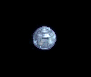 | 弓(1560) | 片手剣(1040) | 矢(1560) | グローブ(900) | 手首(780) | 腕刺青(170) | クロー(1040) | 銃(1560) | 魔弾(1560) |
| ティアメス(上部触手) | 動物 | ボス3 | |||||||
 | 弓(1560) | 片手剣(1040) | 矢(1560) | グローブ(900) | 手首(780) | 腕刺青(170) | クロー(1040) | 銃(1560) | 魔弾(1560) |
| ティアメス(本体) | 動物 | ボス3 | |||||||
 | 弓(1560) | 片手剣(1040) | 矢(1560) | グローブ(900) | 手首(780) | 腕刺青(170) | クロー(1040) | 銃(1560) | 魔弾(1560) |
| ティアメス(下部触手) | 動物 | ボス3 | |||||||
 | 弓(1560) | 片手剣(1040) | 矢(1560) | グローブ(900) | 手首(780) | 腕刺青(170) | クロー(1040) | 銃(1560) | 魔弾(1560) |
| 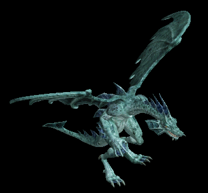 | 弓(1560) | 片手剣(1040) | 矢(1560) | グローブ(900) | 手首(780) | 腕刺青(170) | クロー(1040) | 銃(1560) | 魔弾(1560) |
| アークデビル | 悪魔 | ボス3 | |||||||
| 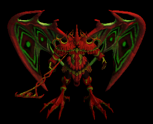 | 弓(1560) | 片手剣(1040) | 矢(1560) | グローブ(900) | 手首(780) | 腕刺青(170) | クロー(1040) | 銃(1560) | 魔弾(1560) |
| ドラコリッチ | アンデット | ボス3 | |||||||
 | 弓(1560) | 片手剣(1040) | 矢(1560) | グローブ(900) | 手首(780) | 腕刺青(170) | クロー(1040) | 銃(1560) | 魔弾(1560) |
| ドラコリッチオーブ | アンデット | ボス3 | |||||||
 | 弓(1560) | 片手剣(1040) | 矢(1560) | グローブ(900) | 手首(780) | 腕刺青(170) | クロー(1040) | 銃(1560) | 魔弾(1560) |
| アンデッド魔法師2 Zin | アンデット | セミ1 | |||||||
 | 鍵(50) | マント(90) | 弾(160) | 手首(230) | 肩刺青(300) | グローブ(350) | |||
| アンデッド魔法師4 Zin | アンデット | ボス1 | |||||||
 | 指輪(150) | 状態異常回復2(250) | 弾(450) | 手首(650) | 矢(850) | グローブ(1000) | 魔弾(850) | ||
| アンデッドライト Zin | アンデット | 一般4 | |||||||
 | 指輪(30) | マント(50) | 弾(90) | 手首(130) | 状態異常回復1(170) | 宝石(200) | |||
| アンデッドライト2 Zin | アンデット | セミ2 | |||||||
 | 指輪(80) | マント(140) | 弾(250) | 手首(360) | 矢(470) | グローブ(550) | 魔弾(470) | ||
| アンデッドライト4 Zin | アンデット | ボス2 | |||||||
| 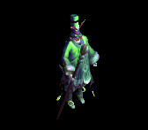 | 指輪(270) | マント(450) | 弾(810) | 手首(1170) | 矢(1530) | グローブ(1800) | 魔弾(1530) | ||
| アンデッドメイジ Zin | アンデット | 一般4 | |||||||
 | 指輪(30) | マント(50) | 弾(90) | 手首(130) | 矢(170) | HP回復(200) | 魔弾(170) | ||
| アンデッドメイジ2 Zin | アンデット | セミ3 | |||||||
| 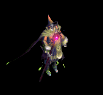 | 鍵(110) | マント(180) | 弾(320) | 手首(460) | 矢(600) | グローブ(700) | 魔弾(600) | ||
| アンデッドメイジ4 Zin | アンデット | ボス3 | |||||||
 | 指輪(360) | マント(600) | 弾(1080) | 手首(1560) | 肩刺青(2040) | グローブ(2400) | |||
| アンデッドロック Zin | アンデット | 一般4 | |||||||
 | 鍵(30) | 状態異常回復2(50) | 弾(90) | 手首(130) | 矢(170) | HP回復(200) | 魔弾(170) | ||
| アンデッドロック1 Zin | アンデット | セミ1 | |||||||
 | 指輪(50) | マント(90) | 帰還(160) | 手首(230) | 矢(300) | グローブ(350) | 魔弾(300) | ||
| アンデッドロック3 Zin | アンデット | ボス2 | |||||||
 | 宝石(270) | マント(450) | 職業鎧(810) | 手首(1170) | 矢(1530) | グローブ(1800) | 魔弾(1530) | ||
| アンデッドロック4 Zin | アンデット | ボス3 | |||||||
 | 指輪(360) | マント(600) | 腕刺青(1080) | 手首(1560) | 矢(2040) | 杖(2400) | 本(2400) | 魔弾(2040) | |
| ボーンキメラZin | アンデット | 一般4 | |||||||
 | 片手剣(30) | 首(50) | 牙(90) | 職業鎧(130) | 状態異常回復1(170) | 兜・帽子(200) | クロー(30) | 双剣(90) | |
| ボーンキメラ2 Zin | アンデット | セミ2 | |||||||
 | 片手剣(80) | 首(140) | 牙(250) | 職業鎧(360) | 槍投擲機(470) | 兜・帽子(550) | クロー(80) | 双剣(250) | |
| ボーンキメラ3 Zin | アンデット | ボス1 | |||||||
 | 片手剣(150) | 首(250) | 宝石(450) | cP回復(650) | 肩刺青(850) | HP回復(1000) | クロー(150) | ||
| ブルーエリゲイト Zin | アンデット | 一般4 | |||||||
 | 片手剣(30) | 首(50) | 十字架(90) | 十字架(130) | 能力向上2(170) | 兜・帽子(200) | クロー(30) | ||
| ブルーエリゲイト1 Zin | アンデット | セミ2 | |||||||
 | 宝石(80) | 首(140) | 牙(250) | 職業鎧(360) | 槍投擲機(470) | イベント(550) | 双剣(250) | ||
| ブルーエリゲイト3 Zin | アンデット | ボス2 | |||||||
 | 職業鎧(270) | 首(450) | 牙(810) | 十字架(1170) | 状態異常回復1(1530) | 兜・帽子(1800) | 双剣(810) | ||
| ブルーエリゲイト4 Zin | アンデット | ボス3 | |||||||
 | 片手剣(360) | 首(600) | 腕刺青(1080) | 職業鎧(1560) | 槍投擲機(2040) | 兜・帽子(2400) | クロー(360) | ||
| 装甲ボーンキメラ Zin | アンデット | 一般4 | |||||||
 | 片手剣(30) | 首(50) | 牙(90) | 職業鎧(130) | 状態異常回復1(170) | HP回復(200) | クロー(30) | 双剣(90) | |
| 装甲ボーンキメラ1 Zin | アンデット | セミ1 | |||||||
 | 片手剣(50) | 首(90) | 帰還(160) | 職業鎧(230) | 肩刺青(300) | イベント(350) | クロー(50) | ||
| 装甲ボーンキメラ2 Zin | アンデット | セミ3 | |||||||
| 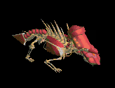 | 能力向上2(110) | 首(180) | 牙(320) | 十字架(460) | 槍投擲機(600) | 兜・帽子(700) | 双剣(320) | ||
| 装甲ボーンキメラ4 Zin | アンデット | ボス3 | |||||||
 | 宝石(360) | 首(600) | 牙(1080) | 能力向上1(1560) | 槍投擲機(2040) | 宝石(2400) | 双剣(1080) | ||
| シーク信者(踊り子)1 Zin | 人間 | セミ1 | |||||||
 | 宝石(90) | 首(260) | スリング(180) | 手首(140) | 状態異常回復1(40) | cP回復(50) | |||
| シーク信者(踊り子)2 Zin | 人間 | セミ3 | |||||||
 | 鎧(180) | 首(530) | スリング(350) | 鎧(280) | 腰(70) | 翼(110) | 水晶(110) | ||
| シーク信者(踊り子)3 Zin | 人間 | ボス2 | |||||||
 | 鎧(450) | 首(1350) | cP回復(900) | 手首(720) | 腰(180) | 翼(270) | 水晶(270) | ||
| シーク信者(踊り子)4 Zin | 人間 | ボス3 | |||||||
 | 鎧(600) | 首(1800) | スリング(1200) | 手首(960) | 腰(240) | 翼(360) | 水晶(360) | ||
| シーク守護者 Zin | 人間 | 一般4 | |||||||
 | 鎧(50) | 首(150) | 帰還(100) | マント(80) | 腕刺青(20) | 翼(30) | 水晶(30) | ||
| シーク守護者1 Zin | 人間 | セミ1 | |||||||
| 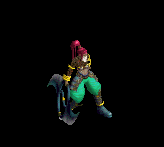 | 能力向上2(90) | 首(260) | スリング(180) | 手首(140) | 腰(40) | イベント(50) | |||
| シーク守護者3 Zin | 人間 | ボス2 | |||||||
 | 鎧(450) | 首(1350) | 杖(900) | 手首(720) | 両手剣(180) | HP回復(270) | 鎌(180) | 本(900) | |
| シーク守護者4 Zin | 人間 | ボス3 | |||||||
 | 鎧(600) | ブローチ(1800) | スリング(1200) | 手首(960) | 腰(240) | 翼(360) | 水晶(360) | ||
| シーク天使 Zin | 人間 | 一般3 | |||||||
| 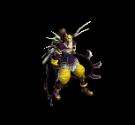 | 鎧(70) | 首(200) | 帰還(130) | 手首(100) | 腰(30) | 翼(40) | 水晶(40) | ||
| シーク天使1 Zin | 人間 | セミ1 | |||||||
 | 鎧(90) | 首(260) | スリング(180) | 手首(140) | 腰(40) | 翼(50) | 水晶(50) | ||
| シーク天使3 Zin | 人間 | ボス2 | |||||||
 | 鎧(450) | ブローチ(1350) | スリング(900) | 手首(720) | 腰(180) | 翼(270) | 水晶(270) | ||
| シーク天使4 Zin | 人間 | ボス3 | |||||||
 | 鎧(600) | 首(1800) | 腕刺青(1200) | 手首(960) | 腰(240) | 翼(360) | 水晶(360) | ||
| 古代悪魔1 Zin | 悪魔 | セミ1 | |||||||
 | 鍵(230) | 首(280) | 両手剣(120) | 手首(70) | 状態異常回復1(40) | グローブ(20) | 鎌(120) | ||
| 古代悪魔2 Zin | 悪魔 | セミ3 | |||||||
 | 指輪(460) | 首(560) | 帰還(230) | 手首(140) | 肩刺青(70) | cP回復(40) | |||
| 古代悪魔3 Zin | 悪魔 | ボス2 | |||||||
| 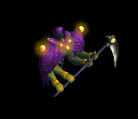 | 宝石(1170) | 首(1440) | 両手剣(590) | 能力向上1(360) | 弓(180) | グローブ(90) | 鎌(590) | 銃(180) | |
| 古代悪魔4 Zin | 悪魔 | ボス3 | |||||||
 | 指輪(1560) | 状態異常回復2(1920) | 両手剣(790) | 手首(480) | 状態異常回復1(240) | グローブ(120) | 鎌(790) | ||
| 死神 Zin | 悪魔 | 一般4 | |||||||
 | 指輪(130) | 首(160) | 両手剣(70) | 手首(40) | 弓(20) | グローブ(10) | 鎌(70) | 銃(20) | |
| 死神2 Zin | 悪魔 | セミ3 | |||||||
 | 鍵(460) | 首(560) | cP回復(230) | 手首(140) | 弓(70) | イベント(40) | 銃(70) | ||
| 死神4 Zin | 悪魔 | ボス3 | |||||||
 | 指輪(1560) | 首(1920) | 帰還(790) | 手首(480) | 弓(240) | HP回復(120) | 銃(240) | ||
| 邪臣 Zin | 悪魔 | セミ1 | |||||||
 | 鍵(230) | 首(280) | 腕刺青(120) | 手首(70) | 肩刺青(40) | グローブ(20) | |||
| 邪臣1 Zin | 悪魔 | セミ2 | |||||||
 | 指輪(360) | 首(440) | 両手剣(180) | 能力向上1(110) | 状態異常回復1(60) | 杖(30) | 鎌(180) | 本(30) | |
| 邪臣3 Zin | 悪魔 | ボス2 | |||||||
 | 指輪(1170) | 職業鎧(1440) | 帰還(590) | 手首(360) | 杖(180) | イベント(90) | 本(180) | ||
| 邪臣4 Zin | 悪魔 | ボス3 | |||||||
 | 鍵(1560) | 首(1920) | 両手剣(790) | 手首(480) | 弓(240) | グローブ(120) | 鎌(790) | 銃(240) | |
| パンプキンヘッド1 Zin | 悪魔 | セミ1 | |||||||
 | 指輪(230) | 首(280) | マント(120) | 笛(70) | 状態異常回復1(40) | イベント(20) | |||
| パンプキンヘッド4 Zin | 悪魔 | ボス2 | |||||||
| 指輪(1170) | 首(1440) | 足(590) | 笛(360) | 腰(180) | グローブ(90) | ||||
| ジャックランタン Zin | 悪魔 | セミ1 | |||||||
 | 鍵(230) | 首(280) | 足(120) | 笛(70) | 状態異常回復1(40) | イベント(20) | |||
| ジャックランタン2 Zin | 悪魔 | ボス1 | |||||||
 | 指輪(650) | 首(800) | 弾(330) | 能力向上1(200) | 肩刺青(100) | グローブ(50) | |||
| ジャックランタン3 Zin | 悪魔 | ボス2 | |||||||
| 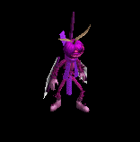 | 能力向上2(1170) | 首(1440) | 帰還(590) | 笛(360) | 腰(180) | グローブ(90) | |||
| エルダーパンプキン Zin | 悪魔 | セミ2 | |||||||
 | 指輪(360) | 首(440) | 弾(180) | 十字架(110) | 腰(60) | HP回復(30) | |||
| エルダーパンプキン1 Zin | 悪魔 | セミ3 | |||||||
 | 鍵(460) | 首(560) | 足(230) | 笛(140) | 状態異常回復1(70) | グローブ(40) | |||
| エルダーパンプキン3 Zin | 悪魔 | ボス2 | |||||||
 | 宝石(1170) | 首(1440) | 帰還(590) | 笛(360) | 肩刺青(180) | イベント(90) | |||
| エルダーパンプキン4 Zin | 悪魔 | ボス3 | |||||||
 | 能力向上2(1560) | 首(1920) | cP回復(790) | 笛(480) | 腰(240) | グローブ(120) | |||
| 堕天使1 Zin | 神獣 | セミ1 | |||||||
 | 鍵(160) | イヤリング(230) | 足(120) | 手首(20) | ステッキ(40) | グローブ(90) | |||
| 堕天使2 Zin | 神獣 | セミ3 | |||||||
 | 投擲(320) | イヤリング(460) | 足(250) | 手首(40) | cP回復(70) | グローブ(180) | |||
| 堕天使3 Zin | 神獣 | ボス2 | |||||||
| 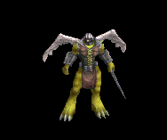 | 鍵(810) | イヤリング(1170) | 弾(630) | 手首(90) | ステッキ(180) | イベント(450) | |||
| 堕天使4 Zin | 神獣 | ボス3 | |||||||
 | 投擲(1080) | イヤリング(1560) | 足(840) | 手首(120) | ステッキ(240) | グローブ(600) | |||
| イーグルヘッド Zin | 神獣 | 一般4 | |||||||
 | 投擲(90) | 弾(130) | 足(70) | 手首(10) | ステッキ(20) | 宝石(50) | |||
| イーグルヘッド2 Zin | 神獣 | セミ3 | |||||||
| 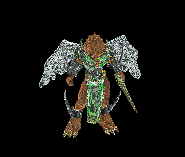 | 鍵(320) | イヤリング(460) | 足(250) | 手首(40) | ステッキ(70) | HP回復(180) | |||
| イーグルヘッド4 Zin | 神獣 | ボス3 | |||||||
 | 鍵(1080) | イヤリング(1560) | 足(840) | 手首(120) | ステッキ(240) | グローブ(600) | |||
| ライオンヘッド1 Zin | 神獣 | セミ2 | |||||||
 | 投擲(250) | イヤリング(360) | 足(190) | 手首(30) | ステッキ(60) | グローブ(140) | |||
| ライオンヘッド2 Zin | 神獣 | セミ3 | |||||||
 | 鍵(320) | イヤリング(460) | 宝石(250) | 手首(40) | 能力向上2(70) | グローブ(180) | |||
| ライオンヘッド4 Zin | 神獣 | ボス3 | |||||||
 | 鍵(1080) | イヤリング(1560) | 足(840) | 手首(120) | cP回復(240) | グローブ(600) | |||
| 泥棒 | 人間 | 一般1 | |||||||
| 杖(410) | スリング(270) | 弾(410) | 腰(230) | 首(210) | 能力向上2(160) | 本(410) | |||
| 堕落魔術師 | 人間 | 一般3 | |||||||
| 杖(360) | スリング(240) | イベント(360) | マント(200) | 首(180) | 能力向上2(140) | 本(360) | |||
| 魔術師 | 人間 | セミ1 | |||||||
| 杖(390) | スリング(260) | 状態異常回復2(100) | 職業鎧(220) | 首(200) | 能力向上2(160) | 本(390) | ||
| 破壊術師 | 人間 | ボス1 | |||||||
| 杖(470) | スリング(310) | 弾(470) | 兜・帽子(260) | 首(240) | 能力向上2(190) | 本(470) | ||
| 泥棒 Ex | 人間 | 一般1 | |||||||
| 杖(410) | スリング(270) | 弾(410) | 腰(230) | 首(210) | 能力向上2(160) | 本(410) | |||
| 堕落魔術師 Ex | 人間 | 一般3 | |||||||
| 杖(360) | スリング(240) | イベント(360) | マント(200) | 首(180) | 能力向上2(140) | 本(360) | |||
| 魔術師 Ex | 人間 | セミ1 | |||||||
| 杖(450) | スリング(300) | 状態異常回復2(110) | 職業鎧(250) | 首(230) | 能力向上2(180) | 本(450) | ||
| 破壊術師 Ex | 人間 | ボス1 | |||||||
| 杖(1200) | スリング(800) | 弾(1200) | 兜・帽子(670) | 首(600) | 能力向上2(480) | 本(1200) | ||
| 死の影 Ex | 神獣 | セミ2 | |||||||
| 両手剣(650) | スリング(430) | 盾(650) | グローブ(360) | 手首(330) | 特殊1(260) | 鎌(650) | |||
| 監視者 | 悪魔 | 一般4 | |||||||
| 笛(300) | 翼(200) | 状態異常回復1(300) | 兜・帽子(170) | 首(150) | 帰還(120) | 水晶(200) | ||
| ガウス | 悪魔 | セミ3 | |||||||
| 笛(450) | 翼(300) | 鍵(450) | 兜・帽子(250) | 首(230) | 帰還(180) | 水晶(300) | ||
| 監視者 Ex | 悪魔 | 一般4 | |||||||
| 笛(300) | 翼(200) | 状態異常回復1(300) | 兜・帽子(170) | 首(150) | 帰還(120) | 水晶(200) | ||
| ガウス Ex | 悪魔 | セミ3 | |||||||
| 笛(800) | 翼(530) | 鍵(50) | 兜・帽子(440) | 首(400) | 帰還(320) | 水晶(530) | ||
| 土蜘蛛 | 動物 | 一般2 | |||||||
| 片手剣(380) | 投擲(250) | 矢(380) | グローブ(210) | 首(190) | 帰還(150) | クロー(380) | 魔弾(380) | |
| 皇帝蜘蛛 | 動物 | 一般3 | |||||||
| 片手剣(360) | 槍(240) | 矢(360) | グローブ(200) | 首(180) | 能力向上1(140) | クロー(360) | 箒(240) | 魔弾(360) |
| 女郎蜘蛛 | 動物 | セミ1 | |||||||
| 片手剣(390) | 槍(260) | 矢(390) | グローブ(220) | 首(200) | 帰還(160) | クロー(390) | 箒(260) | 魔弾(390) |
| 猛毒蜘蛛 | 動物 | ボス1 | |||||||
| 片手剣(470) | 投擲(310) | 矢(470) | グローブ(260) | 首(240) | 宝石(190) | クロー(470) | 魔弾(470) | |
| 土蜘蛛 Ex | 動物 | 一般2 | |||||||
| 片手剣(380) | 投擲(250) | 矢(380) | グローブ(210) | 首(190) | 帰還(150) | クロー(380) | 魔弾(380) | |
| 皇帝蜘蛛 Ex | 動物 | 一般3 | |||||||
| 片手剣(360) | 槍(240) | 矢(360) | グローブ(200) | 首(180) | 能力向上1(140) | クロー(360) | 箒(240) | 魔弾(360) |
| 女郎蜘蛛 Ex | 動物 | セミ1 | |||||||
| 片手剣(450) | 槍(300) | 矢(450) | グローブ(250) | 首(230) | 帰還(180) | クロー(450) | 箒(300) | 魔弾(450) |
| 猛毒蜘蛛 Ex | 動物 | ボス1 | |||||||
| 片手剣(1200) | 投擲(800) | 矢(1200) | グローブ(670) | 首(600) | 宝石(480) | クロー(1200) | 魔弾(1200) | |
| 毒サソリ | 動物 | 一般2 | |||||||
| 弓(380) | 槍(250) | 矢(380) | 兜・帽子(210) | 手首(190) | 特殊1(150) | 箒(250) | 銃(380) | 魔弾(380) |
| スノースコルピオ | 動物 | ボス2 | |||||||
| 弓(490) | 槍(330) | 盾(490) | 兜・帽子(270) | 手首(250) | 特殊1(200) | 箒(330) | 銃(490) | |
| 毒サソリ Ex | 動物 | 一般2 | |||||||
| 弓(380) | 槍(250) | 矢(380) | 兜・帽子(210) | 手首(190) | 特殊1(150) | 箒(250) | 銃(380) | 魔弾(380) |
| スノースコルピオ Ex | 動物 | ボス2 | |||||||
| 弓(2000) | 槍(1330) | 盾(2000) | 兜・帽子(1110) | 手首(1000) | 特殊1(800) | 箒(1330) | 銃(2000) | |
| ゼリーフィッシュ | 動物 | 一般1 | |||||||
| 鞭(410) | スリング(270) | 弾(410) | 腰(230) | 手首(210) | 帰還(160) | |||
| オーカーゼリー | 動物 | 一般3 | |||||||
| 鞭(360) | スリング(240) | 弾(360) | 腰(200) | 手首(180) | 帰還(140) | |||
| クリスタルイカ | 動物 | セミ1 | |||||||
| 鞭(390) | スリング(260) | 弾(390) | 腰(220) | 手首(200) | 能力向上2(160) | |||
| ダイオウイカ | 動物 | ボス1 | |||||||
| 鞭(470) | スリング(310) | 弾(470) | 腰(260) | 手首(240) | 帰還(190) | |||
| ゼリーフィッシュ Ex | 動物 | 一般1 | |||||||
| 鞭(410) | スリング(270) | 弾(410) | 腰(230) | 手首(210) | 帰還(160) | |||
| オーカーゼリー Ex | 動物 | 一般3 | |||||||
| 鞭(360) | スリング(240) | 弾(360) | 腰(200) | 手首(180) | 帰還(140) | |||
| クリスタルイカ Ex | 動物 | セミ1 | |||||||
| 鞭(450) | スリング(300) | 弾(450) | 腰(250) | 手首(230) | 能力向上2(180) | |||
| ダイオウイカ Ex | 動物 | ボス1 | |||||||
| 鞭(1200) | スリング(800) | 弾(1200) | 腰(670) | 手首(600) | 帰還(480) | |||
| 昆虫の大群 | 動物 | 一般2 | |||||||
| 笛(380) | 翼(250) | イベント(380) | 腰(210) | 首(190) | 帰還(150) | 水晶(250) | ||
| イナゴの大群 | 動物 | セミ1 | |||||||
| 笛(390) | 翼(260) | イベント(390) | 兜・帽子(220) | 首(200) | 帰還(160) | 水晶(260) | |||
| 昆虫の大群 Ex | 動物 | 一般2 | |||||||
| 笛(380) | 翼(250) | イベント(380) | 腰(210) | 首(190) | 帰還(150) | 水晶(250) | ||
| イナゴの大群 Ex | 動物 | セミ1 | |||||||
| 笛(450) | 翼(300) | イベント(450) | 兜・帽子(250) | 首(230) | 帰還(180) | 水晶(300) | |||
| オクトパス Ex | 神獣 | 一般1 | |||||||
| 投擲(410) | 牙(270) | イベント(410) | マント(230) | 首(210) | 肩刺青(170) | 双剣(270) | ||
| コルダス Ex | 神獣 | 一般2 | |||||||
| 投擲(380) | 牙(250) | イベント(380) | マント(210) | 首(190) | 肩刺青(180) | 双剣(250) | ||
| コールドアイ Ex | 神獣 | 一般3 | |||||||
| 投擲(360) | 牙(240) | イベント(360) | マント(200) | 首(180) | 肩刺青(190) | 双剣(240) | ||
| フリーザー Ex | 神獣 | セミ1 | |||||||
| 投擲(450) | 牙(300) | イベント(450) | マント(250) | 首(230) | 肩刺青(200) | 双剣(300) | ||
| クーラー Ex | 神獣 | ボス1 | |||||||
| 投擲(1200) | 牙(800) | イベント(1200) | マント(670) | 首(600) | 肩刺青(210) | 双剣(800) | ||
| ホーンドデーモン | 悪魔 | セミ1 | |||||||
| ステッキ(390) | 翼(260) | 状態異常回復2(100) | マント(220) | 手首(200) | 宝石(160) | 水晶(260) | ||
| ホーンドデーモン Ex | 悪魔 | セミ1 | |||||||
| ステッキ(450) | 翼(300) | 状態異常回復2(110) | マント(250) | 手首(230) | 宝石(180) | 水晶(300) | ||
| ボーンドラゴン Zin | アンデット | 一般4 | |||||||
| 片手剣(30) | 首(50) | 牙(90) | 職業鎧(130) | 状態異常回復1(170) | 兜・帽子(200) | クロー(30) | 双剣(90) | |
| 引導者 Zin | 悪魔 | 一般4 | |||||||
| 指輪(130) | 首(160) | 両手剣(70) | 手首(40) | 弓(20) | グローブ(10) | 鎌(70) | 銃(20) | |
| グリフォン Zin | 神獣 | 一般4 | |||||||
| 投擲(90) | 弾(130) | 足(70) | 手首(10) | ステッキ(20) | 宝石(50) | |||
| ハゲワシ闘士 Zin | 悪魔 | セミ1 | |||||||
| 片手剣(1380) | 弓(920) | 盾(1380) | グローブ(770) | 手首(690) | 腕刺青(120) | クロー(1380) | 銃(920) | |
| イーグル狂戦士 Zin | 悪魔 | セミ1 | |||||||
| 片手剣(1560) | 弓(1040) | 矢(1560) | グローブ(870) | 手首(780) | 腕刺青(130) | クロー(1560) | 銃(1040) | 魔弾(1560) | |
| ハゲワシ剣士 Zin | 悪魔 | セミ1 | |||||||
| 片手剣(650) | 両手剣(430) | 盾(650) | グローブ(360) | 手首(330) | 腕刺青(140) | 鎌(430) | クロー(650) | |
| ハゲワシ勇者 Zin | 悪魔 | ボス1 | |||||||
| 片手剣(1000) | 弓(670) | 盾(1000) | グローブ(560) | 手首(500) | 腕刺青(150) | クロー(1000) | 銃(670) | |
| 時の木 Zin | 神獣 | セミ1 | |||||||
| 杖(1200) | 片手剣(800) | HP回復(1200) | グローブ(670) | 首(600) | 能力向上1(480) | クロー(800) | 本(1200) | |
| 戦慄のサソリ Zin | 動物 | ボス2 | |||||||
| 弓(1100) | 槍(730) | 盾(1100) | 兜・帽子(610) | 手首(550) | 特殊1(440) | 箒(730) | 銃(1100) | |
| ダークアーチャー Zin | 人間 | ボス1 | |||||||
| 弓(1000) | 片手剣(670) | イベント(1000) | グローブ(560) | 手首(500) | 腕刺青(190) | クロー(670) | 銃(1000) | |
| ガウス Zin | 悪魔 | セミ3 | |||||||
| 笛(900) | 翼(600) | 鍵(40) | 兜・帽子(500) | 首(450) | 帰還(360) | 水晶(600) | ||
| ボーンドラゴン Zin | アンデット | 一般4 | |||||||
| 片手剣(30) | 首(50) | 牙(90) | 職業鎧(130) | 状態異常回復1(170) | 兜・帽子(200) | クロー(30) | 双剣(90) | |
| グリフォン Zin | 神獣 | 一般4 | |||||||
| 投擲(90) | 弾(130) | 足(70) | 手首(10) | ステッキ(20) | 宝石(50) | |||
| 引導者 Zin | 悪魔 | 一般4 | |||||||
| 指輪(130) | 首(160) | 両手剣(70) | 手首(40) | 弓(20) | グローブ(10) | 鎌(70) | ||
| 鎧霊Ev | アンデット | 一般3 | |||||||
| 弓(1560) | 片手剣(1040) | 弾(1560) | 鎧(870) | 首(780) | 能力向上1(620) | クロー(1040) | 銃(1560) | |
| プレーガーEv | アンデット | 一般3 | |||||||
| スリング(1560) | ステッキ(1040) | 弾(1560) | 腰(870) | 首(780) | ブローチ(140) | |||
| リザードチャージEv | 悪魔 | 一般3 | |||||||
| ステッキ(1560) | 槍(1040) | イベント(1560) | 職業鎧(870) | 首(780) | 能力向上2(620) | 箒(1040) | ||
| 鷲狂戦士Ev | 悪魔 | 一般3 | |||||||
| 片手剣(1560) | 弓(1040) | 矢(1560) | グローブ(870) | 手首(780) | 腕刺青(130) | クロー(1560) | 銃(1040) | 魔弾(1560) | |
| コートナイトEv | 人間 | 一般3 | |||||||
| 槍(1560) | 両手剣(1040) | イベント(1560) | 兜・帽子(870) | 手首(780) | 十字架(130) | 鎌(1040) | 箒(1560) | |
| ソードスパイダーEv | 動物 | 一般3 | |||||||
| 片手剣(1560) | 槍(1040) | 矢(1560) | グローブ(870) | 首(780) | 能力向上1(620) | クロー(1560) | 箒(1040) | 魔弾(1560) |
| 包帯人間Ev | アンデット | 一般3 | |||||||
| 槍(1560) | 杖(1040) | 矢(1560) | 腰(870) | 手首(780) | 能力向上2(620) | 本(1040) | 箒(1560) | 魔弾(1560) |
| シューターEv | 人間 | 一般3 | |||||||
| 弓(1560) | 片手剣(1040) | 矢(1560) | グローブ(870) | 手首(780) | 腕刺青(170) | クロー(1040) | 銃(1560) | 魔弾(1560) | |
| キャストアイEv | 神獣 | 一般3 | |||||||
| 投擲(1560) | 牙(1040) | イベント(1560) | マント(870) | 首(780) | 肩刺青(190) | 双剣(1040) | ||
| ラティアンEv | 悪魔 | 一般3 | |||||||
| 投擲(1560) | 笛(1040) | 弾(1560) | 足(870) | 手首(780) | 帰還(620) | |||
| ブレイジャーEv | 神獣 | 一般3 | |||||||
| スリング(1560) | 牙(1040) | 弾(1560) | グローブ(870) | 手首(780) | 能力向上2(620) | 双剣(1040) | ||
| アクアスライムEv | 動物 | 一般3 | |||||||
| 鞭(1560) | スリング(1040) | 弾(1560) | 腰(870) | 手首(780) | 帰還(620) | |||
| 堕落魔法師Ev | 人間 | 一般3 | |||||||
| 杖(1560) | スリング(1040) | イベント(1560) | マント(870) | 首(780) | 能力向上2(620) | 本(1560) | |||
| 偽聖職者Ev | 人間 | 一般4 | |||||||
| 鈍器(1200) | 翼(800) | 盾(1200) | 職業鎧(670) | 首(600) | 十字架(200) | 水晶(800) | ||
| ドゥームスフィアEv | 悪魔 | 一般4 | |||||||
| 笛(1200) | 翼(800) | 状態異常回復1(1200) | 兜・帽子(670) | 首(600) | 帰還(480) | 水晶(800) | ||
| リザードトルーパEv | 悪魔 | 一般4 | |||||||
| ステッキ(1200) | 弓(800) | 矢(1200) | 職業鎧(670) | 首(600) | 能力向上2(480) | 銃(800) | 魔弾(1200) | |
| エンバームドEv | アンデット | 一般4 | |||||||
| 槍(1200) | 鞭(800) | 状態異常回復1(1200) | 腰(670) | 手首(600) | 能力向上2(480) | 箒(1200) | ||
| レッドアイ護衛兵Ev | 人間 | 一般4 | |||||||
| 槍(1200) | 両手剣(800) | 鍵(70) | 鎧(670) | 手首(600) | 十字架(140) | 鎌(800) | 箒(1200) | |
| 幽霊鎧Ev | アンデット | 一般4 | |||||||
| 弓(1200) | 両手剣(800) | 盾(1200) | 鎧(670) | 手首(600) | 能力向上1(480) | 鎌(800) | 銃(1200) | |
| 火炎悪魔Ev | 神獣 | ボス1 | |||||||
| スリング(1000) | 牙(670) | 弾(1000) | グローブ(560) | 手首(500) | 能力向上2(400) | 双剣(670) | ||
| スノースコルピオEv | 動物 | ボス2 | |||||||
| 弓(1100) | 槍(730) | 盾(1100) | 兜・帽子(610) | 手首(550) | 特殊1(440) | 箒(730) | 銃(1100) | |
| 斧槍兵Sp | 人間 | 一般4 | |||||||
| 槍(1400) | 両手剣(900) | 状態異常回復1(1400) | 鎧(800) | 手首(700) | 十字架(100) | 鎌(900) | 箒(1400) | |
| アクアスライムSp | 動物 | 一般4 | |||||||
| 鞭(1500) | スリング(1000) | 弾(1600) | 腰(900) | 手首(800) | 帰還(600) | |||
| クラーケンSp | 動物 | 一般4 | |||||||
| 鞭(1000) | スリング(670) | 弾(1000) | 腰(560) | 手首(500) | 帰還(400) | |||
| ブルーエリゲイト4 Sp | アンデット | セミ1 | |||||||
| 片手剣(300) | 首(500) | 十字架(900) | 能力向上2(500) | 兜・帽子(1000) | クロー(1100) | |||
| テンプラーSp | 人間 | 一般4 | |||||||
| 槍(1400) | 両手剣(900) | 状態異常回復1(1400) | 鎧(800) | 手首(700) | 十字架(100) | 鎌(900) | 箒(1400) | |
| スリップワーカーSp | アンデット | 一般4 | |||||||
| スリング(1200) | 弾(800) | ステッキ(1200) | 兜・帽子(700) | 首(600) | ブローチ(100) |